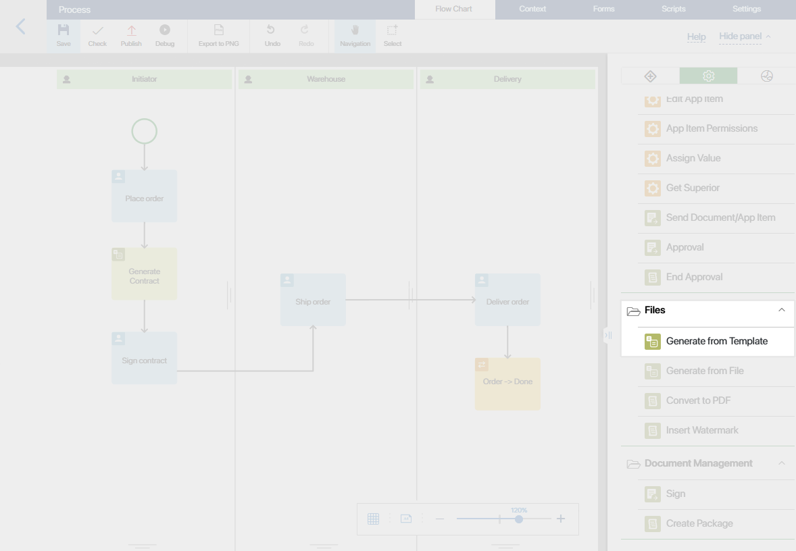
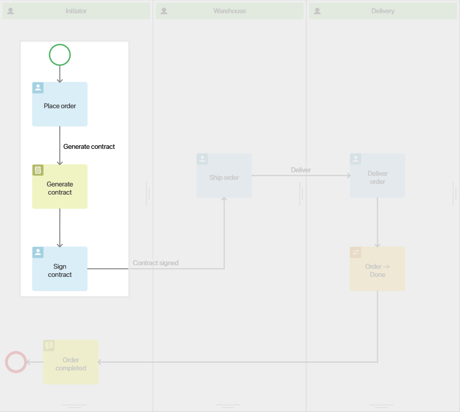

The Generate from Template activity allows you to create documents in a business process by using templates uploaded to the system. The system automatically inserts relevant process data into the document.
As a result, you have, for example, a contract that already includes the signing date, the contractor’s name, and the contract price.
начало внимание
Only users included in the Administrators group can configure the Generate from Template activity.
конец внимание
Set up the Generate from Template activity
On the process page, go to the right pane and open the System Elements tab.

Drag the Generate from Template activity to the process diagram and place it in the spot where you need the system to create a document.
In our example, we need to create an equipment purchase contract right after the Place order task and before the Sign contract task.

Double-click on the activity to open its settings.
General tab
- Name*. Specify the name of the operation as it will be shown on the process diagram.
- Document Template. Select a template. Please note that templates added to a workspace or an app can only be used in business processes created in the same workspace or app.
- Output file*. Select the file that will store the created document. Make sure that you have previously added a File type variable to the process context.
- Generated file name*. By default, the output document file will be named after the selected template. You can specify a different name if needed. For naming the file you can also use properties of the process variables and the
DateTime()function. To add a variable, click {+} on the right side of the field. To use a function, click f(x). Read more about using functions in the Template syntax article. Also in the file name, specify the available format: .doc, .docx, .xls, .xlsx, or .rtf. - Convert to PDF. Check this box if you want the document to be converted into the .pdf format.
- PDF standard. This field appears when the Convert to PDF option is enabled. Select the desired .pdf format. The default option is PDF/A-1a. Other available formats are PDF/A-1b and PDF1.7
Field Values tab
After you have chosen the template, the Field Values tab will appear in the settings window.
The left column shows document template variables. In the right column, you have to specify the corresponding process variables. The values of these variables will then be added to the generated document.
During the process, the document will be created only if values are assigned to all of these variables. Make sure that you have added them to the forms of tasks that are placed before the Generate from Template activity in the process.
Error Handling tab
An error may occur during document generation, for example, if the file creation service is unavailable. You can set the further course of the process and the actions to be performed in this case.
To do this, fill in the fields on the Error Handling tab:
- Notification. Enable the option so that in case of an error, responsible users will be notified about it. You can select:
- Current User. The one who has completed the task preceding the Generate from Template activity in the process diagram.
- Context variable, for example, the initiator.
- Group.
- Org Chart Item.
- Interrupt. Check the box and select the connector the process will follow in case of an error.
- Write an error. Enable the option and specify the variable to which the error text will be written.
When the settings are complete, click Save.
Use the generated file
During the execution of the process, the generated document will be saved to the variable you specified as the output file. You can add it to the form of the task in which the user should receive the document. In our example, this is the Sign contract task.
Save and publish the process.
When executing the process, the employee responsible for filling out the order will enter the contractor’s name, date and the total amount to be paid.
The contract template will be automatically completed with this data. The next process task is Sign contract. On its page, the executor will see the attached contract. The employee who is completing the Sign contract task can simply click on the contract, view it, and print it out.
Found a typo? Select it and press Ctrl+Enter to send us feedback